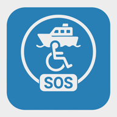

Chi
Ideato e sviluppato da Alessandro Pezzali (pezzaliAPP). Destinatari: passeggeri con disabilità, anziani, bambini e chiunque necessiti di assistenza rapida a bordo; utilizzatori: equipaggio e comando nave.

| ID | Nome | Zona | Lat | Lng | Ora | Stato |
|---|
Nessun segnale ricevuto. Avvia la demo o collega un gateway LoRa via USB.
La demo simula in locale una traversata con dispositivi FerryGuard a bordo: nessun server, nessun costo, funziona anche offline. Tutto avviene dentro il tuo dispositivo.
Un sistema aperto e gratuito perché nessun passeggero fragile resti invisibile durante una traversata.
Ideato e sviluppato da Alessandro Pezzali (pezzaliAPP). Destinatari: passeggeri con disabilità, anziani, bambini e chiunque necessiti di assistenza rapida a bordo; utilizzatori: equipaggio e comando nave.
Un tag indossabile con pulsante SOS che trasmette identità, posizione GPS e stato via radio LoRa alla plancia, dove questa dashboard mostra in tempo reale chi ha bisogno di aiuto e dove si trova.
Radio LoRa 868 MHz: portata di centinaia di metri attraverso i ponti nave, senza Wi-Fi, senza SIM, senza internet. Hardware open a basso costo (ESP32 + SX1276 + GPS), software open source, dashboard PWA installabile su qualsiasi dispositivo.
Durante l'imbarco, la traversata e lo sbarco: i momenti in cui la rete cellulare sparisce e le persone fragili sono più esposte. Il tag trasmette un heartbeat periodico e un SOS immediato alla pressione del pulsante.
Traghetti e navi passeggeri, ma anche eventi, RSA in gita, campeggi e aree senza copertura. Ovunque serva localizzare e soccorrere in fretta senza infrastruttura.
Perché la sicurezza non deve dipendere dal segnale del telefono né da abbonamenti. FerryGuard è gratuito, autocostruibile e replicabile da compagnie, associazioni e maker.
Componenti reperibili ovunque, costo stimato del singolo tag: circa 25–35 €. Firmware incluso (ferryguard_tag.ino).
| Componente | Ruolo | Note |
|---|---|---|
| ESP32 DevKit | Microcontrollore | Wi-Fi/BT integrati, alimentazione 3,3 V |
| LoRa SX1276 | Radio 868 MHz | Banda libera EU, portata centinaia di metri |
| GPS u-blox NEO-6M | Posizione | UART2, utile sui ponti esterni |
| Pulsante SOS | Allarme | Con debounce e latch software |
| LED di stato | Feedback | Lampeggio non bloccante |
| Batteria LiPo + TP4056 | Alimentazione | Ricaricabile via USB |
| Case stampato 3D | Involucro | Indossabile, aggancio a laccio |
LoRa SX1276 ESP32 NSS ────────────── GPIO 18 RST ────────────── GPIO 14 DIO0 ────────────── GPIO 26 SCK/MISO/MOSI ───── SPI (18 di default VSPI) GPS NEO-6M ESP32 (UART2) TX ────────────── GPIO 16 (RX) RX ────────────── GPIO 17 (TX) Pulsante SOS ─────── GPIO 13 → GND (INPUT_PULLUP) LED stato ─────── GPIO 12 → resistenza 220 Ω → GND
FerryGuard cerca persone e realtà che credano nel progetto: maker, compagnie di navigazione, associazioni, sponsor tecnici. Nessuna raccolta fondi qui dentro: i contatti restano solo sul tuo dispositivo finché non decidi tu di inviarli.
| Nome | Ruolo | Data |
|---|
Nessuna adesione salvata.